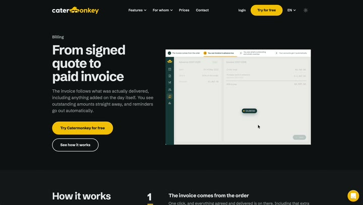

I'm a software engineer who mostly thinks in Clojure. By day I work in fintech and I've got experience in health tech, e-commerce, advertisement, logistics and ML. In my spare time I build small, sharp tools: protocol libraries, audio plugins, tiny databases.
I like taking something opaque, like a binary protocol, a temporal data model or a synthesis algorithm from a 1990s paper, and turning it into code that explains itself. The projects below some nice examples.
Some of my work

Skills
- Languages
- Clojure, ClojureScript, Babashka, Rust, Python, TypeScript, Ruby on Rails, GraphQL
- Domains
- Binary protocols, Audio DSP, Temporal data, Generative art, Fintech, Health tech, E-commerce, Wholesale, Cloud computing, ERP, SEO, CRM, ML
- Tooling
- core.async, deps.edn & Clojars, nih-plug, SQLite, Quil / Processing, OpenSpec
Projects
- Grid congestion analysis2026Live →
An interactive data dashboard visualizing Dutch electricity network bottlenecks and future congestion.
- clj-insim2021–2026View on GitHub →
A Clojure client for Live For Speed's InSim binary protocol, built on core.async.
- Thorgend2026View on GitHub →
A Rust synthesizer plugin built on Xenakis's GENDY dynamic stochastic synthesis.
- Bitten2026View on GitHub →
A tiny bi-temporal, append-only database server in Babashka and SQLite.
- Swark2024–2026View on GitHub →
A Swiss-army-knife utility library for Clojure and ClojureScript, published on Clojars.
- Open-source contributions2020–2026View on GitHub →
Fixes, features and examples contributed upstream to Babashka and SCI.
- Generative art2024–2026View on GitHub →
Interactive generative sketches in Quil, built on my own genartgear library.